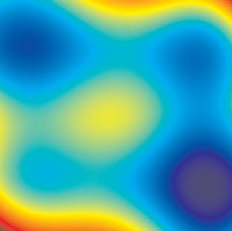

Learning Theory from First Principles
statistical-learning-theorygeneralization-boundssupervised-learningoptimizationneural-networkskernel-methods
Learning Theory from First Principles
Authors: Francis Bach Year: 2025 (draft dated May 26, 2025; MIT Press final version announced for 2024) Tags: statistical-learning-theory, generalization-bounds, empirical-risk-minimization, optimization, concentration-inequalities, supervised-learning
TL;DR
Graduate-level textbook deriving rigorous guarantees for widely-used supervised learning algorithms (linear, kernel, sparse, neural, ensemble) from first principles, organized around a three-way estimation/approximation/optimization error decomposition. Fills the gap between introductory ML texts and advanced research monographs by prioritizing simplicity of proof over tightness of constants, while covering modern topics including overparameterized models and structured prediction.
First pass — the five C's
Category. Pedagogical textbook / survey of existing theory; no new results claimed.
Context. Statistical learning theory subfield. Explicitly positions against Mohri et al. (2018) Foundations of Machine Learning, Shalev-Shwartz and Ben-David (2014) Understanding Machine Learning, Koltchinskii (2011) empirical processes, and Christmann and Steinwart (2008) SVMs as deeper or wider alternatives. Deliberately replaces VC-dimension-based bounds (Vapnik and Chervonenkis 2015) with Rademacher complexity throughout.
Correctness. Load-bearing assumptions: (1) i.i.d. data—explicitly stated and never relaxed (except the online learning chapter); (2) real-valued prediction functions as universal interface, even for discrete outputs; (3) measurability issues are glossed over (author acknowledges this, citing Devroye et al. 1996 for rigorous treatment). All three appear valid for the stated scope.
Contributions. - Unified first-principles derivation of estimation, approximation, and optimization error bounds for every major algorithm family in a single notation system. - Rademacher-complexity-first treatment that entirely bypasses VC dimension, making least-squares regression the theoretical spine. - Chapter 12 integrates double descent, implicit bias of gradient descent, neural tangent kernels, and mean-field limits into a single modern overparameterization chapter. - Chapter 13 on structured prediction and Chapter 14 on PAC-Bayes are included alongside classical material with unified notation.
Clarity. Well-organized with difficulty diamonds (♦/♦♦/♦♦♦), chapter summaries, and embedded exercises; the mathematical prerequisites (linear algebra, probability, calculus) are substantial, and the preface is honest that this is not an introductory ML text.
Second pass — content
Main thrust: Builds from concentration inequalities (Hoeffding, McDiarmid, Bernstein) through ERM generalization bounds to algorithm-specific guarantees for linear models, kernels, sparsity, and neural networks, then extends to online learning, ensembles, overparameterized models, and structured prediction—always decomposing excess risk into estimation + approximation + optimization components.
Supporting evidence: - Hoeffding's inequality (Prop 1.2): for n i.i.d. variables in [0,1], P(empirical mean − true mean ≥ t) ≤ exp(−2nt²); inverted: deviation < |a−b|√(log(2/δ)/(2n)) with probability 1−δ. - McDiarmid's inequality (Prop 1.3): function with bounded variation c concentrates as P(|f − E[f]| ≥ t) ≤ 2exp(−2t²/(nc²)); used in Section 4.4.1 to bound ERM estimation error. - Sub-Gaussian tail (eq. 1.9–1.10): P(|Z − E[Z]| ≥ t) ≤ 2exp(−t²/(2τ²)); Gaussian variables with variance σ² are sub-Gaussian with parameter σ². - Ridge regression lower bound (Section 3.7) and Rademacher complexity for ball-constrained linear predictors (Section 4.5.3) are presented as matched upper/lower rate pairs. - Double descent (Section 12.2) includes analytic treatment for linear regression with Gaussian inputs and Gaussian projections.
Figures & tables: No figures or tables appear in the provided excerpt (Chapter 1). The TOC indicates illustrative simulation experiments in Sections 3.5.2, 7.7, 8.4, 9.6, 10.3.7, and 13.7, with code at https://www.di.ens.fr/~fbach/ltfp/. Axis labeling, error bars, and statistical significance of those figures cannot be assessed from the provided text.
Follow-up references: - Mohri, Rostamizadeh, Talwalkar (2018) — broader and deeper on many topics the book abbreviates. - Boucheron, Lugosi, Massart (2013) — advanced concentration inequalities beyond what Chapter 1 covers. - Koltchinskii (2011) — rigorous empirical process theory underlying the Rademacher bounds. - Devroye, Györfi, Lugosi (1996) — measure-theoretic foundations deliberately omitted here.
Third pass — critique
Implicit assumptions: - i.i.d. assumption is never relaxed in the core 9 chapters; results do not transfer to distribution shift, covariate shift, or dependent data without additional argument. - Restricting to real-valued predictors and Rademacher complexity hides combinatorial structure exploited by VC theory; the choice aids pedagogy but obscures tightness in classification problems with discrete geometry. - "First principles" requires linear algebra, probability, and calculus at a graduate level—the prerequisite bar is higher than the framing implies. - Proofs are explicitly chosen for simplicity over constant-optimality; stated constants in bounds may be off by logarithmic or polynomial factors relative to the literature.
Missing context or citations: - No treatment of distribution shift, domain adaptation, or out-of-distribution generalization—increasingly central to applied ML. - Transformer architectures, attention mechanisms, and self-supervised/contrastive learning are absent despite the book's 2024–2025 publication date. - The online learning chapter covers regret minimization but does not engage with the now-large literature on online-to-batch conversions or adaptive data analysis. - Causal inference connections (potential outcomes, structural equations) are not mentioned despite overlap with the "beyond supervised learning" framing in Section 2.7.
Possible experimental / analytical issues: - All numerical experiments are author-described as "synthetic" and "illustrative"; no real-data benchmarks are used to validate the rate predictions against practice—this is a principled choice but limits the connection between theory and empirical behavior. - The double descent analysis (Section 12.2) is restricted to Gaussian inputs; generalization to structured or real data distributions is noted as open without quantitative bound. - Exercises are embedded without solutions; this is noted by the author as intentional but limits self-study verification. - The provided text ends mid-proof of Bernstein's inequality (Section 1.2.3 is cut off), so completeness of later chapters cannot be verified from the supplied material.
Ideas for future work: - Add a chapter or substantial section on distribution shift / robustness, connecting the estimation-approximation-optimization decomposition to transfer learning guarantees. - Provide tight (matching) minimax rates for neural networks beyond the variation-norm results in Chapter 9, particularly for deep architectures with depth-dependent bounds. - Extend the overparameterization chapter (12) to include non-Gaussian, non-isotropic data regimes where the double descent curve changes qualitatively. - Include numerical experiments on real datasets to test whether the theoretical rates predict observed sample-complexity behavior, even approximately.
Figures from the paper

Methods
- empirical risk minimization
- Rademacher complexity
- concentration inequalities
- gradient descent
- stochastic gradient descent
- ridge regression
- kernel ridge regression
- PAC-Bayesian analysis
- Lasso / l1-regularization
- boosting
- online mirror descent
- neural tangent kernels
Claims
- Learning theory can be developed from first principles using estimation, approximation, and optimization error decompositions to explain overfitting and underfitting phenomena.
- Rademacher complexities provide generic generalization bounds for real-valued prediction functions as a preferred alternative to VC dimension.
- Gradient-based optimization methods are central to modern machine learning and their convergence properties are tightly linked to generalization guarantees.
- Overparameterized models exhibit double-descent behavior and implicit bias of gradient descent toward minimum-norm solutions.
- Kernel methods and single-hidden-layer neural networks can be analyzed within a unified framework relating approximation error to function-space norms.